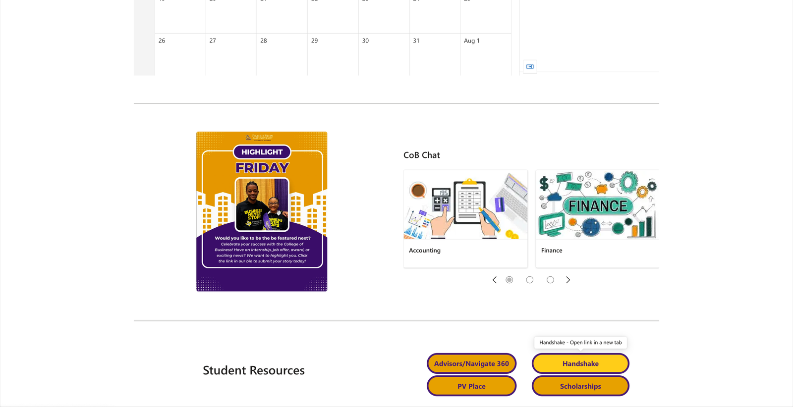
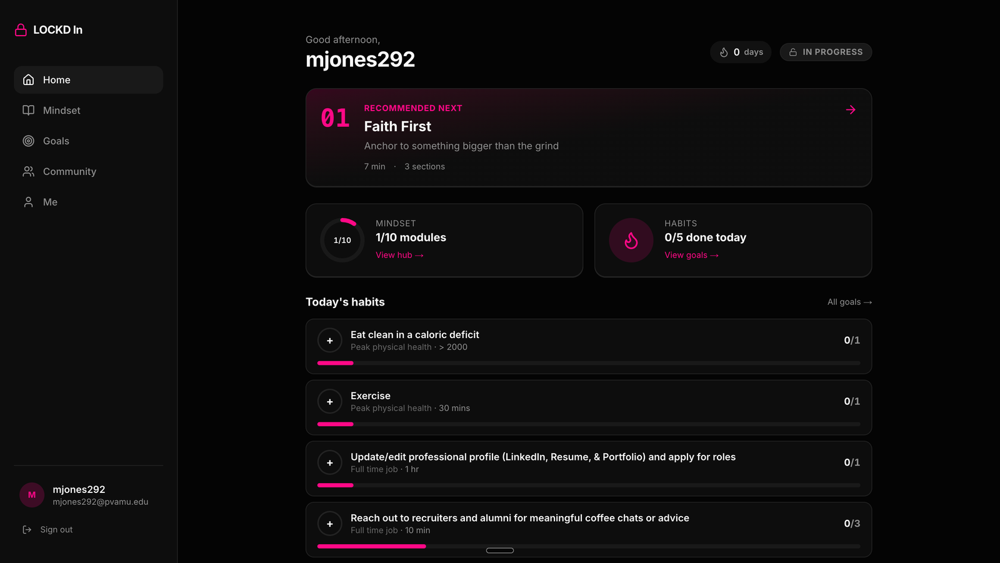
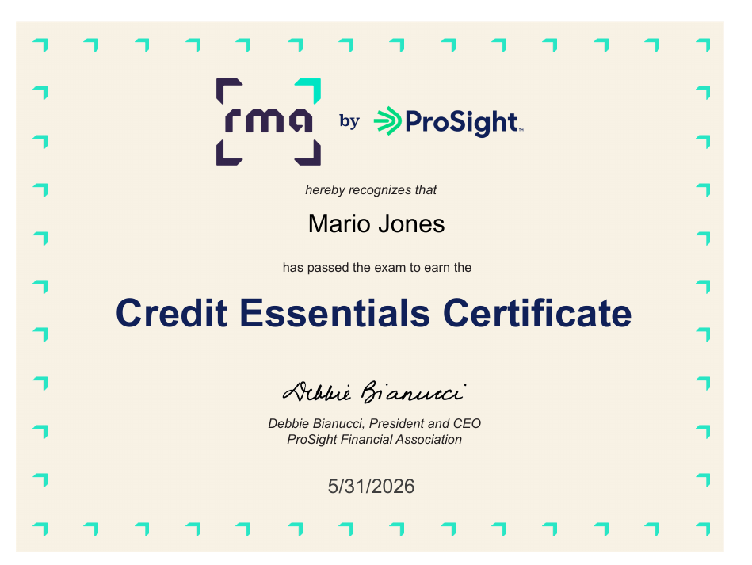
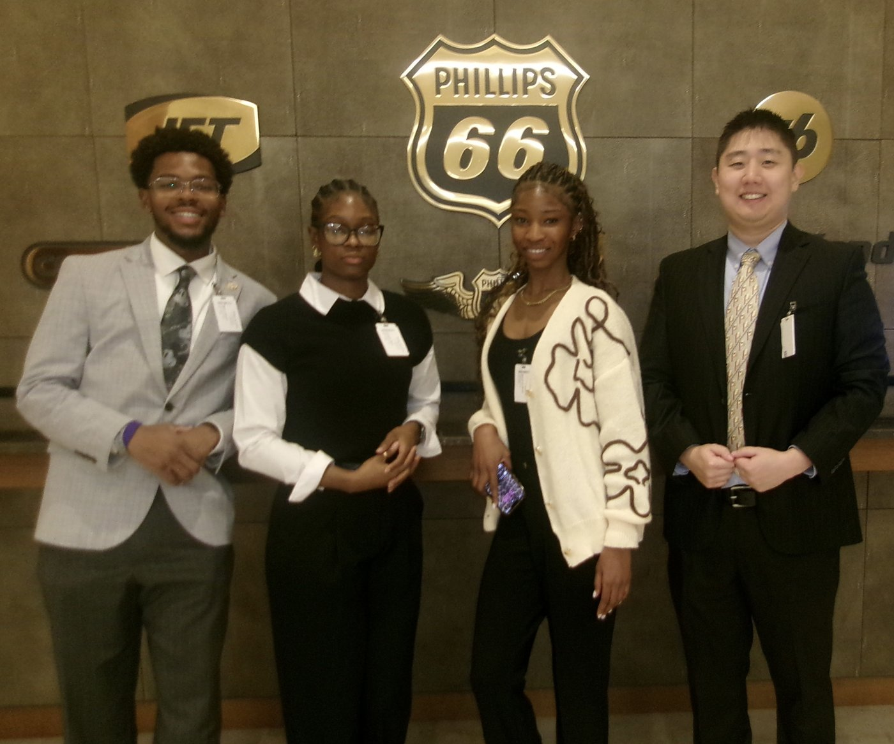
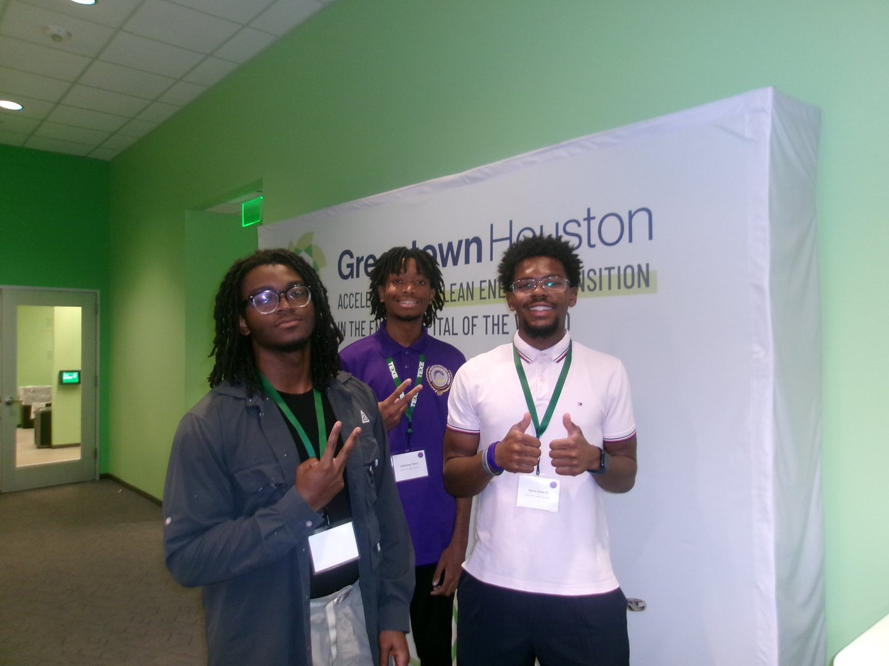
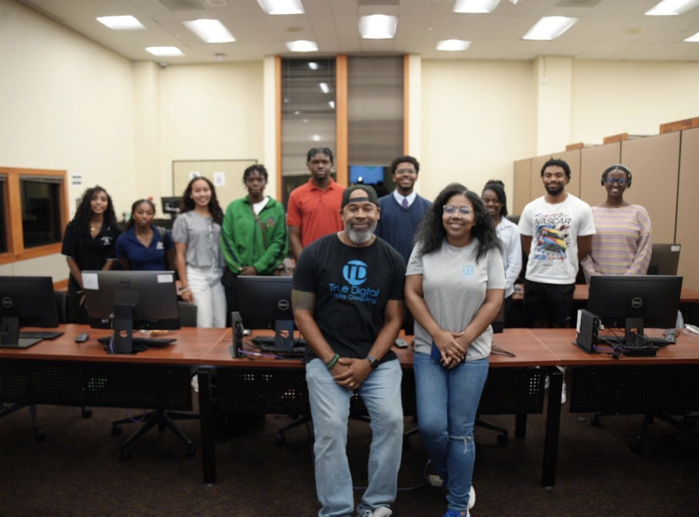
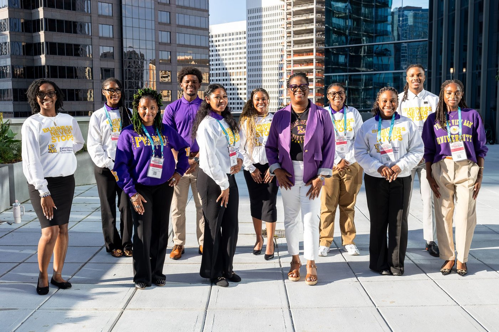
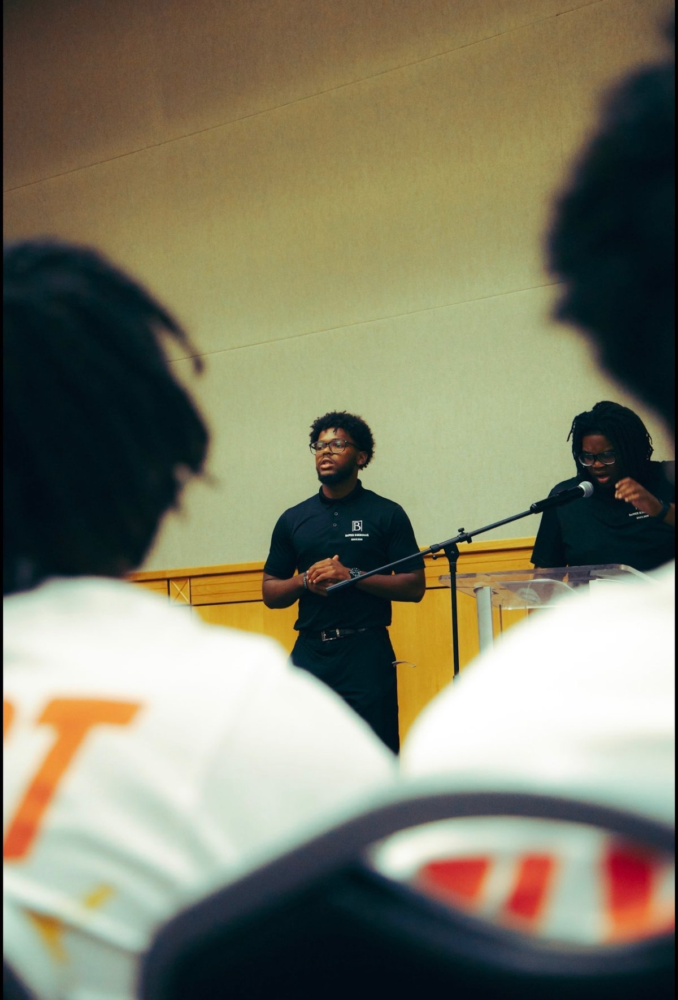
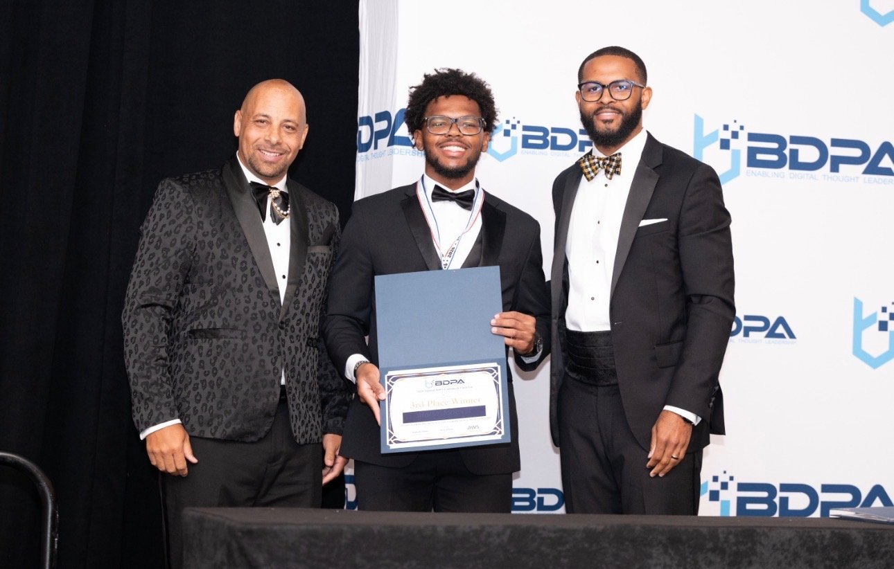

ACCOUNT HOLDER: MARIO JONES IIPRAIRIE VIEW A&M UNIVERSITY · B.B.A. MIS · GPA 3.3 · MAY 2027STATUS: OPEN TO OPPORTUNITIES ●
Businesses run on systems.
I build both.
I'm a Management Information Systems major working at the intersection of IT
operations, financial operations, and software: from leading a SharePoint & Teams
hub rollout for PVAMU's College of Business, to building TensorFlow analytics
pipelines, to founding a personal-development platform for college students.
College of Business Digital Hub | SharePoint & Teams
Identified a campus-wide visibility gap by scraping the school's event site with Python, surfacing organizations hosting events that never reached most students. Led the rollout of a centralized SharePoint & Teams hub for posting and tracking organization events, applying the full SDLC across design, testing, and deployment.
Built to WCAG AA accessibility standards and PVAMU brand
compliance ahead of college-wide deployment, broadening equitable access to
opportunities.
SharePointPythonSDLCWCAG AAMicrosoft 365

FIG 001 · Intranet homepage, College of Business
JE-002
2025 to PRESENT
FOUNDER
LOCKD In | Personal Development Platform
Founder of a platform built for college students to lock in on their goals, combining goal and habit tracking, guided mindset modules, streaks, and community service event hubs in one place. Built a working MVP in VS Code with Firebase, owning product direction, design, and the build; full production kicks off in fall 2026.
Product DesignFull-StackFirebaseEntrepreneurship

FIG 002 · LOCKD In dashboard, pre-launch build
JE-003
JAN 2026 to PRESENT
DATA · ML
Predictive NBA Analytics Pipeline
Engineered an automated end-to-end Python pipeline (built on Claude Code and Kiro AI) that optimizes asset selection via a custom 12-filter methodology cross-referenced with daily Statmuse analytics, achieving an 88.9% historical hit rate. A TensorFlow regression model weighing variables such as travel and blowout-risk improved precision by a further 15%. The reporting layer applies all four analytics types: descriptive, diagnostic, predictive, and prescriptive.
PythonTensorFlowREST APIsMachine LearningGenerative AI
Led a team through a 72-hour sprint, documenting and assisting in executing the technical prototyping of an AI + IoT monitoring system from scratch with Python, Raspberry Pi, and Arduino, applying machine learning models and anomaly detection algorithms to enable predictive analytics, then delivering the executive-level presentation.
Lead developer of HBCU Drop, a campus marketplace for both students and student entrepreneurs to buy and sell products and services. We saw that listings were fragmented across scattered social media posts, so we built one place to bring them together, delivered through the Campus Mail Center with no meetups required. What began as a marketing group project grew into an organizational venture; it is currently in pre-launch development.
Built for and pitched at the national BDPA (Black Data Processing Associates) FI2L Pitch Competition, securing a 3rd-place national finish and $5,000 in AWS credits toward continued development and maintenance.
This site is hand-coded in HTML/CSS, deployed on GitHub Pages, and built around a custom "ledger" design system that reflects my background in accounting and financial operations. No frameworks, no templates.
PVAMU Center for IT Excellence (CITE) · Prairie View, TX
Provide front-line help desk support, resolving technical requests and minimizing downtime across campus infrastructure.
Handle endpoint provisioning and maintenance, including reimaging fleets of loaner laptops to deploy clean, standardized builds for student use.
SEP 2026
Student Google Gemini Ambassador
YMC Marketing · Prairie View, TX
Managed logistics for a two-day campus activation, demonstrating new Gemini features, including its interactive visualization tools, to 500+ students.
Drove active registrations for the Gemini Student Pro plan through live, hands-on product demos.
LIVE · Gemini campus activation · demoing interactive visualizations
JAN 2026 to AUG 2026
IT Operations Intern
PVAMU College of Business · Prairie View, TX
Surfaced a campus-wide event visibility gap by scraping the school's event site with Python, then led the SharePoint & Teams hub rollout that closed it (see JE-001).
Maintained college-wide technical operations by executing software updates across all computer systems and resolving hardware issues for desktop terminals, projectors, and 3D printers.
Configured secure access provisioning and administered systems access for student leadership.
JUL 2025
Project Intern | Business Analysis
Kevin Kelley Concepts · Dallas, TX
Synthesized market feasibility, demographic, and zoning research into a data-backed business case, reporting directly to the leadership board.
JAN 2019 to PRESENT
Financial Operations Assistant
Jones & Jones Strategic Consulting · Frisco, TX
Attained 100% audit-readiness across consulting engagements by managing complex financial records and maintaining regulatory and compliance standards.
Reduced annual tax-reporting turnaround from 3 days to under 4 hours by architecting custom Excel models that automated data reconciliation and compliance reporting.
ONGOING
Campus Leadership
Prairie View A&M University
President, Beta Alpha Psi, which drove a 60% increase in active membership to achieve Silver designation, built a mentorship track for underclassmen, and secured leaders from 20+ companies for professional-development engagements.
Director of IT, PVAMU Strategy Group, where he consulted with student entrepreneurs alongside CoB senators, engineering an MVP solution and securing $5,000 in AWS funding for continued development.
Council Member, Dean's Student Advisory Council · Membership Chair, BDPA · Co-Chaplain, The B.E.A.U.X. of Prairie View.
Active in NSN, NSBE, ColorStack, Scholars of Finance, AMA, and the PVAMU Banking Program.
Skills on the Books
FOLIO 03 · AUDITED
Languages
Python
Java
C#
SQL
HTML / CSS
Data & Analytics
TensorFlow
Power BI
Tableau
Excel (advanced modeling)
Platforms & Tools
Microsoft 365 & SharePoint
Teams
Git & GitHub · VS Code
Firebase
Google Analytics
Business & Concepts
SDLC
ERP fundamentals
Networking
Credit analysis (RMA certified)
Compliance & audit readiness
Supporting Documents
FOLIO 04 · EXHIBITS

EXHIBIT A · RMA Credit Essentials Certificate · May 2026

EXHIBIT B · Phillips 66 BEN Case Competition '25 · Refinery capital investment analysis across upstream, midstream & downstream operations

EXHIBIT C · TEX-E Bootcamp '25 · Disciplined Entrepreneurship with MIT faculty & Greentown Labs; pitched a climate-tech solution

EXHIBIT D · True Digital Marketing C.A.S.E. Competition '25 · Business development lifecycle, venture pitch to industry professionals

EXHIBIT E · National Sales Network Conference '25 · Represented PVAMU's College of Business in Atlanta

EXHIBIT F · Panther Camp (Orientation Week) · Spoke to incoming freshmen with The B.E.A.U.X. on professionalism and self-presentation

EXHIBIT G · BDPA FI2L Pitch Competition '25 · Accepting 3rd place national for HBCU Drop, sponsored by AWS